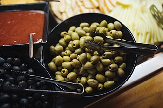

オリーブの生産量
いちばん多くとれる都道府県
オリーブが日本でいちばん多くとれるのは香川県です。507 tで、全国（590 t）の86%を占めます。

| 順位 | 都道府県 | 収穫量 | 全国に占める割合 |
|---|---|---|---|
| 1位 | 香川県 | 507 t | 86% |
| 2位 | 大分県 | 17 t | 2.9% |
| 3位 | 静岡県 | 17 t | 2.9% |
この数字について
- 分類：モクセイ科
- 全国の収穫量：590 t
- この数字が表すもの：収穫量（畑や田でとれた重さ）
- 調査：特産果樹生産動態等調査 令和5年産
- この品目は統計に上位3産地しか載っていません。4位以下は国が公表していないため分かりません。